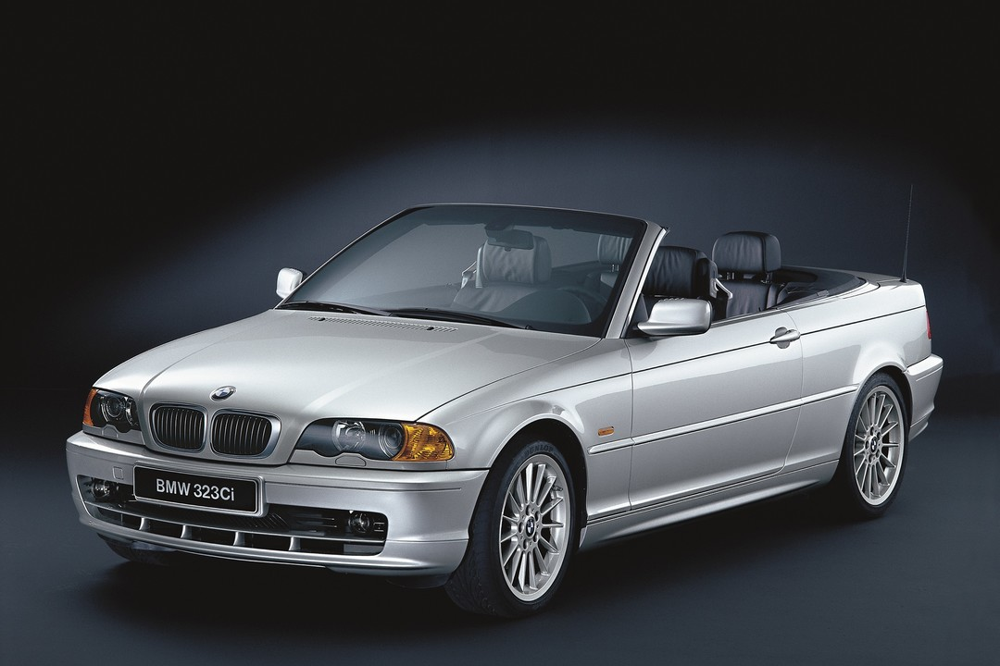

Welcome
The BMW E46 cabrio is a convertible version of the popular BMW 3 series compact executive car. It was produced from 1999 to 2006 and features a retractable softtop roof, allowing for open-air driving. The E46 cabrio also has a sporty and sleek design, with a variety of engine options ranging from a 4-cylinder to a 6-cylinder. It is known for its handling and performance capabilities, as well as its luxury features and comfortable interior. Overall, the BMW E46 cabrio is a well-rounded and stylish car that offers the best of both worlds: the luxury and performance of a coupe, and the freedom and enjoyment of a convertible.
